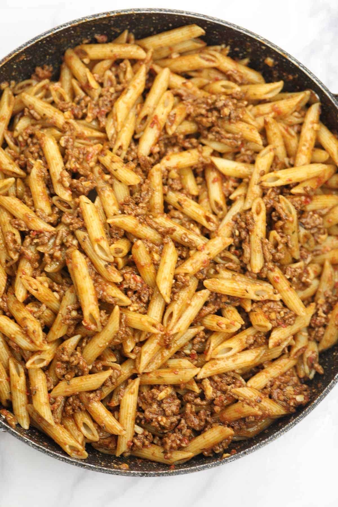

Home
Doom's Pasta
This savory dish is a labor of love directly from Doom. It is the result of much experimentation mixed with just a hint of
desperation as a direct result of having only a small amount of money but needing good quality food. This dish is easy to make
and tastes great!

Ingredients
- 1 head of garlic
- 1 Mayan sweet onion
- .5 pounds of presliced stew meat
- 1 box Pastaroni brand "Butter and herb" pasta
- 3 Tbl spoons butter
- 2/3 cup milk
- 2 cups water
- pepper (to taste)
- Great Value Cajun seasoning (to taste)
Prep
- peel and mash garlic
- slice onion thin
That's all there is for prep! other than mesuring out portions of the other ingredients (which we recommend doing to save hassle
during the cooking steps) your ready to start cooking!
Cooking
- heat large skillet to medium-high and add 1 TBL spoon of butter to a large skillet and let melt
- begin preparing box pasta according to instructions provided on the box
- once the butter melts add onion and garlic to skillet and let cook until onion begins to brown
- add stew meat to skillet and cook till brown
- reduce heat of skillet and add pepper and cajun seasoning according to personal preference
- mix pasta in with meat and mix well
- wait 5 minutes for dish to cool and enjoy!
Home